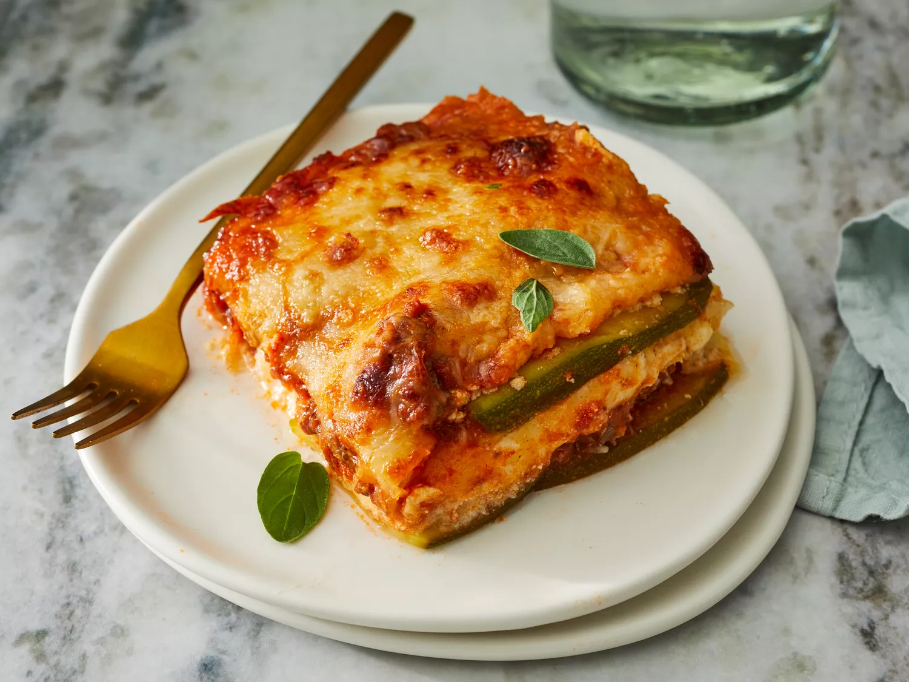

Zucchini Lasagna
This lasagna is made with fresh zucchini slices instead of pasta!

This low-carb and gluten-free beef lasagna is delicious and satisfying; it's sure to be a crowd-pleaser!!
Ingredients
- Cooking spray
- 1 1/2 large zucchinis, thinly sliced lengthwise
- 1 tablespoon olive oil
- 1 lb ground beef
- 1 1/2 cups low-carb marinara sauce
- 2 teaspoons salt, divided
- 1 teaspoon dried oregano
- 1/2 teaspoon ground black pepper
- 1 (8 ounce) comtainer ricotta cheese
- 1 large egg
- 1/2 teaspoon ground nutmeg
- 2 cups shredded mozzarella cheese
- 1/4 cup grated parmesan cheese
- aluminum foil
Directions
- Preheat the oven to 375 degrees F. Grease an 8-inch square baking dish with cooking spray
- Pat dry zucchini slices with a paper towel to remove excess moisture and set aside.
- Heat olive oil in a saucepan over medium-high heat. Add ground beef; cook until browned, 5 to 8 minutes
- Add marinara sauce, 1 teaspoon salt, oregano, and pepper; simmer for 10 minutes. Set aside
- Combine ricotta cheese, egg, 1 teaspoon salt, and nutmeg in a bowl; mix well. Set aside
- Arrange one layer of zucchine slices in the prepared baking dish. Cover with 1/2 of the sauce. Add another layer of zucchini slices and spread rucotta mixture on top. Sprinkle with half the mozzarella cheese. Add another layer of zucchini slices; cover with remaining sauce and top with remaining mozzarella cheese and parmesan cheese. Cover the baking dish with aluminum foil.
- Bake in the preheated oven for 30 minutes. Remove the aluminum foil and bake untill top is golden, about 15 minutes more.
- Serve and enjoy!!!